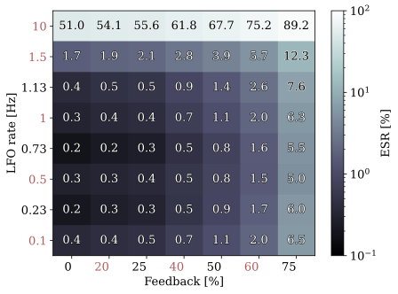
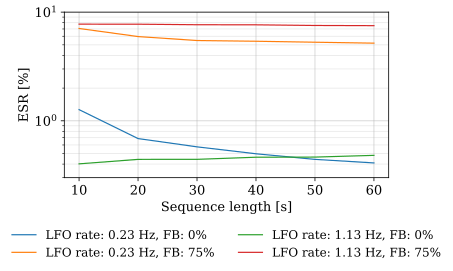

EEICT 2026
David Leitgeb
david.leitgeb@vutbr.cz
Abstract
This paper presents a gray-box neural network model of the flanger audio effect. The proposed architecture estimates the time-variant transfer function of the flanger effect and applies it to the Short-Time Fourier Transform (STFT) of the input signal to produce the output signal. The model was implemented in the PyTorch framework and evaluated using the error-to-signal ratio (ESR) metric, with results compared to a previously proposed black-box approach. Experimental results show that the model is capable of reproducing the characteristic comb-filter character of the flanger effect while achieving competitive performance for the considered parameter settings.
Resources
Paper (to be published)Model architecture

Training Parameters
| Training: | STFT: | ||
|---|---|---|---|
| Epochs | 10,000 | FFT size | 4096 |
| Batch size | 1 | Frame size | 1764 |
| Optimizer | Adam | Hop size | 441 |
| LR exponential decay | 0.9997 | Model: | |
| Dataset: | LSTM hidden size | 32 | |
| Sample rate | 44.1 kHz | MLP hidden size | 512 |
Experiments
Comb Filter
The first experiment evaluates whether the proposed model correctly reproduces the comb-filter character, which represents the defining characteristic of the flanger effect. The input signal used during evaluation was white noise. The LFO rate and feedback gain were set to 0.23 Hz and 75 %, respectively.

Target

Predicted
ESR Evaluation
One of the metrics used to evaluate the proposed model was ESR. Figure below shows the ESR values for different combinations of LFO rate and feedback gain. The horizontal axis corresponds to the LFO rate, while the vertical axis represents the feedback gain. Axis labels in black correspond to parameter configurations used during training, while red labels represent unseen parameter combinations.

Input
ESR Dependence on Sequence Length
Another experiment evaluated how the ESR changes with the length of the evaluated signal for different parameter configurations. The results are shown in the figure below. The test signal was a one-minute guitar recording obtained from a reference listed in the paper.
